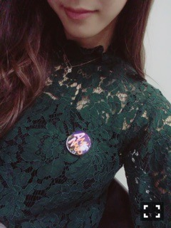

| 2016/10 24 Mon | 斎藤ちはる 緑。 |
ちはるーむへようこそ！！
昨日、久しぶりに愛未とじっくり会えた◎
舞台ずっとお疲れ様(﹡ˆ ˆ﹡)
先日のずーとの写真と同じく、
これまたシンメみたい！！
髪色も前髪も巻き髪も笑顔も()
そして遅くなっちゃったけど
愛未お誕生日おめでとう♡
本当は日時回ってちょっとしてから
ボイスメッセージ送ったんだよ〜
いくちゃんには負けるけど
本気のソング！！
喜んでくれたみたい(ｰ)笑
愛未とは多分、
おばあちゃんになっても
一緒にいるんだろうな〜と
思ってしまうくらいの仲です◎
これからも一緒に笑い合っていこうね！
楽しい思い出沢山つくってこう〜
ちなみにあみあみ族さんから頂いた
生誕祭のバッジを付けて握手しました！
生誕祭行けなかった代わりに。

-------------------------♡
今日はストリートジャック発売日です！！
乃木坂の連載Hello me!は
幼い頃の自分と向き合う連載になってます。
ずーっと初回から出たいと思ってた
連載だったので
本当嬉しい\( ˆ ˆ )/♡
ありがたいです！！
インタビューも昔の自分と照り合わせながら
話したので是非見てね〜
(今日の写真緑ばっかりだ！笑)
-------------------------♡
♬ ChihaMusic
「カタオモイ」Aimerさん
初めて聞いたとき、すうっと
心に入ってきた。
一瞬でこの曲好き！って思えた。
心地が良くて、ずっと聞いていたい歌。
歌詞も好きだな〜
"たった一度の たった一人の
生まれてきた幸せ味わってるんだよ"
たった一度の人生
自分の好きなことを、
好きなように、
悔いなく生きられたらいいな。
ChihAnswer募集します！
先週はお休みだったので
その分も沢山待ってます( ¨̮ )
そしてそして、NOGIBINGO!7、
今日見てくださいな。
いつもと違う私が待ってますよ( ¨̮ )
おやすみ〜
斎藤ちはる